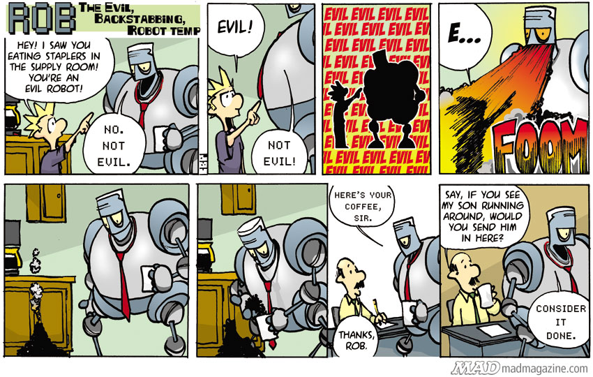

About me
This website is made by a student of the Sint-Maartenscollege in Voorburg. The purposes of the assignment were the following:
Get started with coding using
- HTML
- CSS
- Git
Get to know about Machine Learning
How a website designer works
Making this website was a truly awesome experience. Not only have we learned what we needed to, we also learned about how machine learning works.
